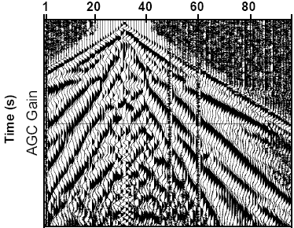

The figures to the right illustrate effects of low pass and high pass
filters. First examine the figure and try to identify aspects caused by
high frequencies. Then try to identify aspects caused by lower freqeuncy
components in the signal.
Click buttons below to switch between different versions of the same
data displayed after filtering.
|
no filter |
low pass |
high pass |.
Which of these three could also be described as the result of applying a
low cut filter, and which is the result of applying a
high cut filter?